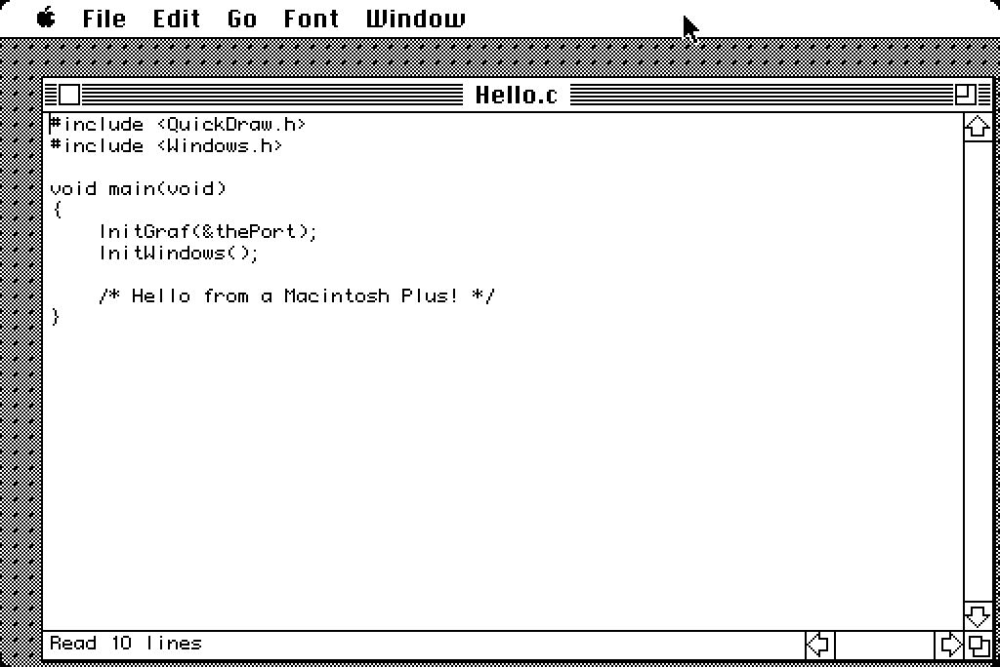

tico68 is tico for the classic Macintosh: a small text editor, written as a real Mac application for the Motorola 68000. It's meant for a Macintosh Plus with 4 MB of memory under System 6 or System 7.0.1, and for later Macs that run 68k code.

It's a Mac program first. Each document has its own window with a title and scroll bars, the menus work the way you'd expect, the mouse selects text, and Cut, Copy and Paste use the Mac clipboard. You open it by double-clicking it or a document in the Finder.
The goal is simple: keep the muscle memory of tico and nano on a machine with a 512 × 342 screen and an 8 MHz CPU, and make quick edits to text files pleasant without giving up the rest of the Mac.
Edit → Preferences… chooses one of three keyboard profiles:
The menus stay the same in every profile. Meta is ⌘-Option, or in the tico profiles Esc (Clear on a Plus keypad) followed by a key. Plain Option still types MacRoman characters, and with the arrow keys it does the work of the Home, End and Page keys a Plus doesn't have.
tico's title bar and shortcut bar are optional. By default they appear only when a window has room for them, so on a Plus every row goes to your text, and on a large monitor tico68 looks like tico. The Preferences dialog can show or hide each bar for good, and the Font menu lists your fixed-width fonts. The default is Monaco 9.
Like tico, tico68 reads and writes DOS (CR LF), Unix (LF) and classic Mac
(CR) text files, keeping each file's format when it saves. You can change
a document's format from the File menu. New documents are saved in Mac
format. It opens any file, and asks first if the file isn't type TEXT.
Saving looks after the rest of the file too. Only the data fork is edited, so a file keeps its resource fork, type, creator and Finder information. tico68 writes the new text to a temporary file first, so a full disk doesn't cost you the file, and a failed save leaves your text in its window. Locked files are refused rather than overwritten.
tico68 has movement, typing, a mark and selections, line cut, copy and paste, and opening and saving files. There's no help, search, replace, undo, syntax highlighting or UTF-8. Keys for commands it doesn't have just say "Unbound key", and the shortcut bar lists only the commands that are there.
Text is kept in memory. That means a file of about 2 MB at most on a 4 MB Plus under System 6, or about 1 MB under System 7 or MultiFinder until you raise the application's memory in Get Info. Opening a big file takes a while: expect about 15 KB a second on a Plus. The DIFFERENCES file has the details.
tico68 is new, and the current version is 0.01. It has been tested under Mini vMac on System 6 and 7.0.1, and has had a first, good run on a real Macintosh Plus. It hasn't been tried on any other real Mac yet.
Download tico68-800k.dsk from the
releases page. It's a
plain 800K HFS disk image for a Floppy Emu or an emulator, and it holds
the application of about 55 KB and the README. The source, built on Linux
with Retro68, is at
github.com/tico-edit/tico68.